Accueil
Accueil
Accueil
Virtual encyclopedia of musical instruments around the world
Home
Families
Bands
In the world
A to Z
Website FR
Instruments from the Woodwinds family
Accordion, button
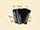
Accordion, piano
Algaita
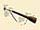
Bagpipe of Highland
Basset-Horn
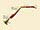
Bassoon
Bassoon, double
Bullroarer
Chalumeau
Clarinet
Clarinet, bass
Concertina
Crumhorn
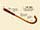
Curtal
Di
Diple
Duda
Dvojnice
English Horn
Fife
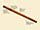
Flageolet
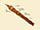
Flute
Flute, Nose
Flute, One-keyed
Flute, Piccolo
Harmonica
Hichiriki
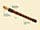
Kena
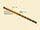
Khaen
Launeddas
Nay
Northumbrian Small-Pipe
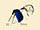
Oboe
Ocarina
Panpipes or Syrinx
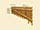
Pungi
Recorder
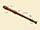
Sahnai
Saxophone, Alto
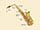
Saxophone, Baritone
Saxophone, Soprano
Saxophone, Tenor
Shakuhachi
Shawm
Sheng
Suona
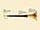
Tin Whistle
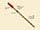
Zampogna
Zukra
Zummara
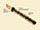
Zurna
Legal notice